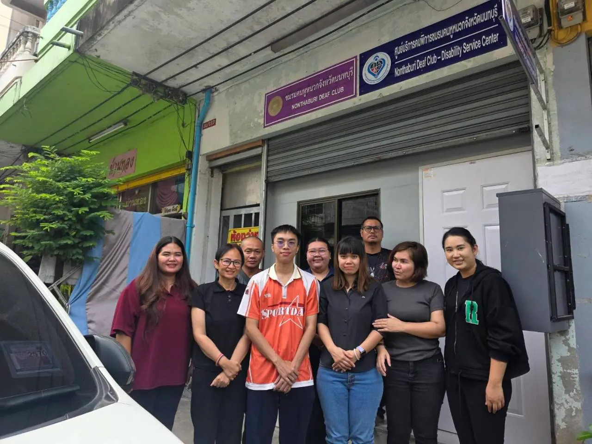
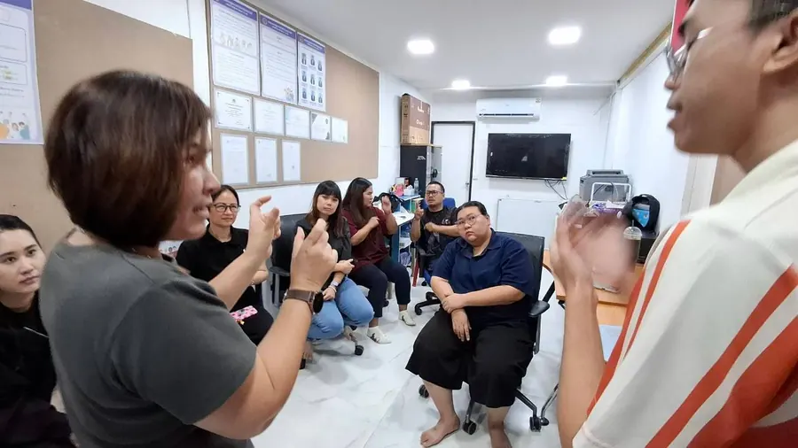
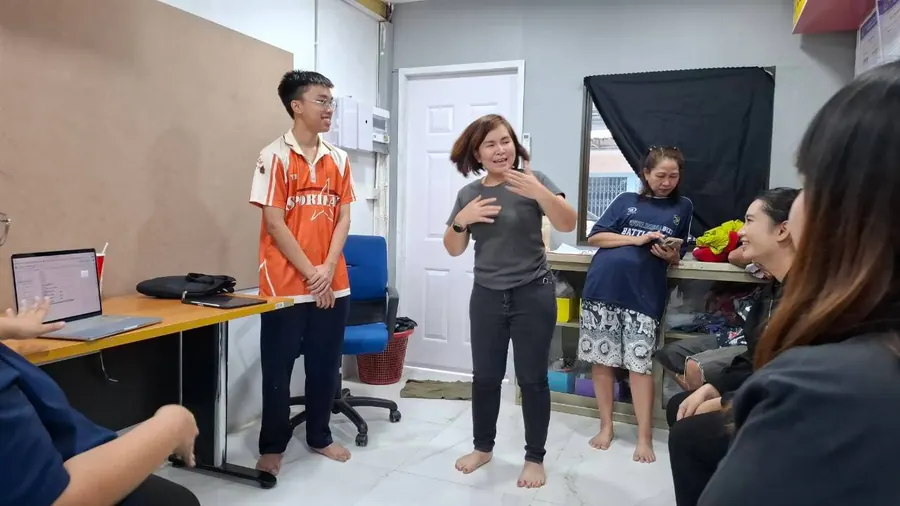
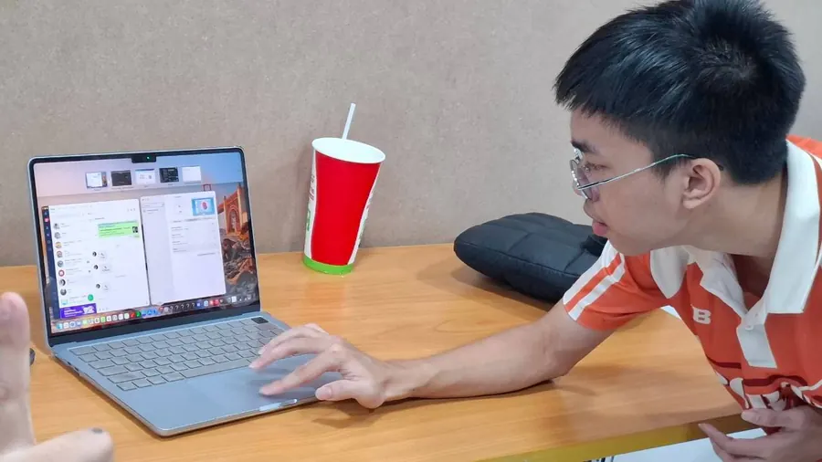
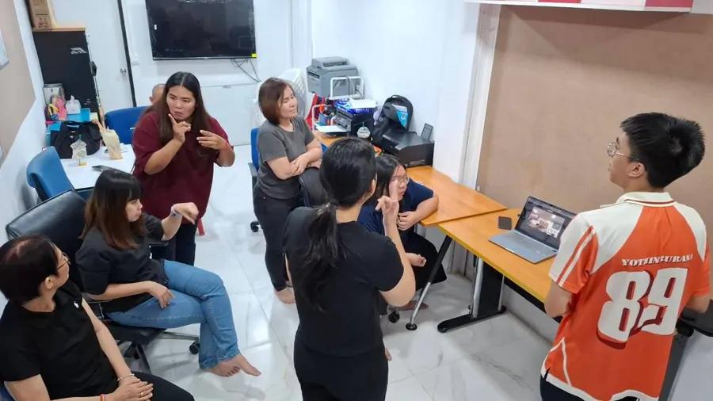

สะพานสื่อสารภาษามือไทยสองทางที่ทำงานในเบราว์เซอร์ และการศึกษาว่าทำไมระบบพลาดเมื่อเจอผู้ใช้ใหม่A two-way Thai Sign Language bridge that runs in the browser, and a study of why it fails with a new signer.
โครงงานอยู่ระหว่างพัฒนา ทีมกำลังวางแผนทดลองใช้ร่วมกับชมรมคนหูหนวก จังหวัดนนทบุรี ยังไม่ได้ทดสอบกับผู้ใช้จริง ในสถานบริการ หรือในสถานพยาบาลWork in progress. The team is planning a try-out with the Nonthaburi Deaf Club. It has not been tested with real users, at a service point, or in a hospital.
ใช้ได้ดีที่สุดกับ Chrome บนคอมพิวเตอร์ ต้องอนุญาตให้ใช้กล้อง ภาพจากกล้องประมวลผลในเครื่องของคุณWorks best in Chrome on a computer. It asks for camera permission, and camera images are processed on your device.
ผู้แสดงหูหนวกDeaf signers
5 คน5
คำที่ใช้จำแนกWords classified
28 คำ28
ท่าที่ใช้Signs used
6,688 ท่า6,688
ภาพหรือใบหน้าในชุดข้อมูลImages or faces in the dataset
ไม่มีNone
S01ขอบคุณthank youS03ขอบคุณthank you
มือช่องที่ 1hand slot 1มือช่องที่ 2hand slot 2
คำ “ขอบคุณ” จากผู้แสดงสองคน นี่คือทั้งหมดที่ระบบเห็น: ตัวเลขตำแหน่งจุดมือ 30 เฟรม ไม่มีภาพหรือใบหน้า สังเกตว่าคำเดียวกันออกมาไม่เหมือนกัน ปัญหาของโครงงานนี้เริ่มตรงนี้The word “thank you” from two signers. This is all the system sees: 30 frames of hand-point numbers, no images or faces. Notice that the same word comes out differently. This study starts there.
1
กล้องเห็นคนทำท่าThe camera sees someone sign
เดโมรับภาพจากกล้องในเครื่องของคุณ ภาพไม่ถูกส่งออกไปไหน และชุดข้อมูลของเราไม่มีภาพเลย เราจึงแสดงแค่จุดมือ ซึ่งเป็นสิ่งเดียวที่ระบบเก็บThe demo takes the picture from your own camera; the picture never leaves the device, and our dataset holds no images at all. So here we show only the hand points, the only thing the system keeps.
2
MediaPipe อ่านมือเป็นตัวเลขMediaPipe reads the hands as numbers
ทุกเฟรม MediaPipe หาข้อต่อ 21 จุดต่อมือ จุดละ 3 ค่า สองมือรวม 126 ค่า สีฟ้าและสีส้มคือมือสองช่องIn every frame MediaPipe finds 21 points per hand, 3 values each: 126 values for two hands. Blue and orange are the two hand slots.
3
ตัดท่าแล้วย่อเหลือ 30 เฟรมThe sign is cut and resampled to 30 frames
ท่าเริ่มเมื่อมือขยับและจบเมื่อมือนิ่ง 0.2 วินาที แล้วย่อเหลือ 30 เฟรมเท่า ๆ กัน นี่คือ 30 เฟรมจริงของท่านี้A sign starts when the hand moves and ends after 0.2 s of stillness, then becomes 30 even frames. These are the real 30 frames of this sign.
4
LSTM ให้คะแนนแต่ละคำThe LSTM scores each word
LSTM อ่าน 30 เฟรมต่อกัน แล้วบอกว่าเป็นคำไหนและมั่นใจแค่ไหน ตัวอย่างนี้มาจากการทดสอบจริงที่โมเดลไม่เคยเห็นผู้แสดง S01The LSTM reads the 30 frames in order and says which word it is and how sure it is. This example is from the real test, where the model had never seen signer S01.
5
ตอบ หรือบอกว่าไม่แน่ใจAnswer, or say “not sure”
ถ้าความมั่นใจถึงเกณฑ์ของคำนั้น ระบบตอบ ถ้าไม่ถึงจะบอกว่าไม่แน่ใจ ลองท่าที่ 2 ของคนเดียวกัน: โมเดลทายผิดเป็น “แพ้ยา” แต่ความมั่นใจไม่ถึงเกณฑ์ ระบบจึงไม่ตอบผิดIf the confidence reaches that word's threshold, the system answers; if not, it says it is not sure. Try take 2 from the same person: the model guessed “drug allergy”, wrongly, but below the threshold, so the system did not give the wrong answer.
ระบบทำงานอย่างไรHow it works
สี่ขั้นตอนนี้ตรงกับหมายเลขบนโปสเตอร์ แตะรูปเพื่อเปิดขนาดเต็มThese four steps match the numbers on the poster. Tap a figure to open it full size.
1ขั้นที่ 1Step 1ทำท่าภาษามือผ่านกล้องSign in front of the camera
ผู้แสดงหูหนวก 5 คนบันทึกท่าของ 30 คำด้วยสมาร์ตโฟน ผู้แสดงหลัก 3 คนทำซ้ำคำละราว 75–105 ครั้ง อีก 2 คนน้อยกว่า ไม่มีสคริปต์ตายตัวว่าต้องทำท่าอย่างไร รวม 7,267 วิดีโอ ชุดข้อมูลเก็บเฉพาะตัวเลขจุดมือ ไม่มีภาพหรือใบหน้า ใช้รหัสผู้แสดงแทนชื่อFive deaf signers recorded 30 words on a smartphone. The three main signers repeated each word about 75–105 times and the other two fewer, with no fixed script for how to sign: 7,267 videos in all. The dataset keeps only hand-point numbers, never images or faces, and signer codes instead of names.
ผู้แสดงแต่ละคนทำท่าของแต่ละคำซ้ำหลายครั้งEach signer repeated every word many times
อ่านอย่างไรHow to read itอ่านจากบนลงล่าง กรอบเส้นประคือสิ่งที่ทำซ้ำในแต่ละคำRead top to bottom; the dashed box is what repeats for every word.
สิ่งที่บอกเราWhat it tells usแต่ละคนทำท่าคำเดียวซ้ำหลายสิบครั้งติดกัน ท่าของคนเดียวกันจึงคล้ายกันมาก เราจึงต้องทดสอบกับคนที่โมเดลไม่เคยเห็นEach person repeated one word dozens of times in a row, so one person's signs look very alike. That is why we test on people the model has never seen.
คำเดียวกัน ผู้แสดงต่างกัน ได้ตัวเลขต่างกันThe same word from two people gives different numbers
อ่านอย่างไรHow to read itซ้ายคือจุดมือ 6 จาก 30 เฟรมของสองคนที่ทำคำเดียวกัน ขวาคือตาราง 30×126 ที่โมเดลรับจริง แถบสีเข้มคือเฟรมที่ไม่พบมือLeft: hand points in 6 of the 30 frames, two people, same word. Right: the 30×126 table the model really receives; dark bands are frames with no hand found.
สิ่งที่บอกเราWhat it tells usคำเดียวกันจากคนต่างกันได้ตัวเลขต่างกัน และบางเฟรมมือหายไป โมเดลต้องรับมือได้ทั้งสองอย่างThe same word from different people gives different numbers, and sometimes a hand goes missing. The model has to cope with both.
S01 และ S03 ให้ข้อมูลราว 73% ของทั้งหมดS01 and S03 supply about 73% of the signs
อ่านอย่างไรHow to read itความสูงของแท่งคือจำนวนท่าที่แต่ละคนบันทึกEach bar is how many signs that person recorded.
สิ่งที่บอกเราWhat it tells usS01 และ S03 ให้ข้อมูลราว 73% ผลของ S04 และ S05 จึงแกว่งมากกว่า เพราะมีท่าให้ทดสอบน้อยS01 and S03 supply about 73%, so results for S04 and S05 swing more: they have few signs to test on.
ใช้ 28 จาก 30 คำในตัวจำแนก28 of the 30 words are used by the classifier
อ่านอย่างไรHow to read itแต่ละแถบคือจำนวนที่เหลือหลังแต่ละขั้นEach bar is what remains after each stage.
สิ่งที่บอกเราWhat it tells usการตัดท่าเสียไป 99 และเราตัดคำ หมอ กับ ขา ออก เหลือ 6,688 ท่าใน 28 คำCutting lost 99, and we left out the words for 'doctor' and 'leg': 6,688 signs in 28 words remain.
โครงสร้างโฟลเดอร์ของชุดข้อมูลHow the dataset is organised
อ่านอย่างไรHow to read itโฟลเดอร์เรียงจาก keypoints → ผู้แสดง → คำ → ไฟล์หนึ่งท่าFolders go keypoints → signer → word → one file per sign.
สิ่งที่บอกเราWhat it tells usหนึ่งไฟล์คือหนึ่งท่า เป็นตัวเลขล้วน และใช้รหัสแทนชื่อOne file is one sign, numbers only, with a code instead of a name.
ปัดดูรูปถัดไปSwipe for more
2ขั้นที่ 2Step 2อ่านมือด้วย MediaPipeRead the hands with MediaPipe
MediaPipe หาข้อต่อ 21 จุดต่อมือในทุกเฟรม ได้ 126 ค่าต่อเฟรม กฎตัดท่าเริ่มเมื่อมือขยับและจบเมื่อมือนิ่ง 0.2 วินาที แล้วย่อเหลือ 30 เฟรม ใช้กฎเดียวกันตอนฝึกและตอนใช้งานจริง เรายังทดลองวิธีจัดการมือซ้าย–ขวา และการวัดตำแหน่งมือจากใบหน้าMediaPipe finds 21 points per hand in every frame, giving 126 values per frame. A sign starts when the hand moves and ends after 0.2 s of stillness, then is resampled to 30 frames; the same rule runs in training and in live use. We also tested handling of left and right hands, and measuring hand position from the face.
ภาพตัวอย่างประกอบ ไม่ใช่ข้อมูลจริงAn illustration, not real data
อ่านอย่างไรHow to read itเส้นคือการขยับของมือ ช่วงสีคือส่วนที่ถูกเก็บเป็นท่า (ภาพตัวอย่าง)The line is how much the hand moves; the coloured span is what is kept as the sign (an illustration).
สิ่งที่บอกเราWhat it tells usระบบตัดท่าเองด้วยกฎเดียวกันทั้งตอนฝึกและตอนใช้งาน ท่าที่โมเดลเห็นจึงหน้าตาแบบเดียวกันเสมอThe system cuts signs itself with one rule, in training and in live use, so the model always sees signs shaped the same way.
MediaPipe แยกมือเป็น 2 ช่อง แต่มือหลักอยู่คนละช่องในแต่ละคนMediaPipe has two hand slots, but the main hand sits in a different slot for different people (labels in Thai)
อ่านอย่างไรHow to read itสองช่องคือมือสองข้างที่ MediaPipe แยกไว้ ช่องที่มีสีคือมือที่ขยับมากThe two boxes are MediaPipe's two hand slots; the coloured one holds the hand that moves most.
สิ่งที่บอกเราWhat it tells usมือหลักของ S02 อยู่อีกช่อง ถ้าไม่จัดการ ความแม่นยำของ S02 เหลือ 35% เมื่อจัดการแล้วขึ้นเป็นราว 74%S02's main hand sits in the other slot. Without handling, S02 gets 35%; with it, about 74%.
วัดมือเป็นกี่เท่าของความกว้างใบหน้าThe hand is measured in face widths (labels in Thai)
อ่านอย่างไรHow to read itสองภาพคือท่าเดียวกันที่ระยะต่างกัน ลูกศรสองหัวคือความกว้างใบหน้าBoth pictures are the same sign at different distances; the double arrow is the face width.
สิ่งที่บอกเราWhat it tells usวัดมือเป็นหน่วยความกว้างใบหน้าทำให้ไม่ขึ้นกับระยะ แต่ผลดีขึ้นบางคำ แย่ลงบางคำ จึงยังไม่ใช้Measuring the hand in face widths removes distance, but it helped some words and hurt others, so it is not used yet.
ปัดดูรูปถัดไปSwipe for more
3ขั้นที่ 3Step 3LSTM เดาคำศัพท์LSTM guesses the word
LSTM อ่านข้อมูล 30 เฟรมตามลำดับเวลา แล้วให้คะแนนว่าเป็นคำไหนมากที่สุด ถ้าความเชื่อมั่นถึงเกณฑ์ของคำนั้น ระบบจะตอบ ถ้าไม่ถึงจะบอกว่า "ไม่แน่ใจ" เรานำ LSTM ปกติมาเทียบกับ LSTM + DANN ที่เพิ่มหัวทายผู้แสดง เพื่อให้โมเดลมองข้ามว่าใครเป็นคนทำท่า โดยใช้ข้อมูลและการตั้งค่าเหมือนกัน กำหนดเกณฑ์ตัดสินไว้ก่อนทดสอบ และทดสอบกับผู้แสดงที่โมเดลไม่เคยเห็นAn LSTM reads the 30 frames in order and scores which word is most likely. If its confidence reaches that word's threshold the system answers, otherwise it says "not sure". We compared a plain LSTM with LSTM + DANN, which adds a signer-guessing branch so the model learns to ignore who is signing. Both use the same data and settings, the pass rule was fixed before testing, and every test is on a signer the model has never seen.
ต่างกันที่หัวเสริมตัวเดียว ใช้ตอนฝึกเท่านั้นThe only difference is one extra branch, used in training only
อ่านอย่างไรHow to read itแถวบนคือ LSTM ปกติ แถวล่างเพิ่มกิ่งในกรอบเส้นประTop row is the plain LSTM; the bottom row adds the branch in the dashed box.
สิ่งที่บอกเราWhat it tells usDANN พยายามซ่อนว่าใครเป็นคนทำท่า แต่ในข้อมูลของเรา ความแม่นยำลดลงในผู้แสดงทั้ง 5 คน (46.3% เทียบ 51.9%)DANN tries to hide who is signing, but on our data accuracy fell for all 5 signers (46.3% vs 51.9%).
ตัวเลข 41% และ 92% ในภาพเป็นตัวอย่างThe 41% and 92% are example values
อ่านอย่างไรHow to read itแถบคือความมั่นใจของโมเดล เส้นประคือเกณฑ์ของคำนั้น ตัวเลขในภาพเป็นตัวอย่างThe bar is the model's confidence; the dashed line is that word's threshold. The numbers are examples.
สิ่งที่บอกเราWhat it tells usถ้าต่ำกว่าเกณฑ์ ระบบบอกว่าไม่แน่ใจแทนการเดา คำตอบผิดที่ดูมั่นใจอันตรายกว่าการขอให้ทำซ้ำBelow the threshold the system says it is not sure instead of guessing: a confident wrong answer is worse than asking again.
เกณฑ์ที่ตั้งจากผู้แสดงที่เคยเห็นสัญญา 95.4% แต่ได้จริง 66.2%A threshold set on seen signers promised 95.4% but delivered 66.2%
อ่านอย่างไรHow to read itแท่งคือความแม่นยำของคำตอบที่ระบบยอมตอบ เส้นประคือเป้า 90%Each bar is the accuracy of the answers the system gives; the dashed line is the 90% target.
สิ่งที่บอกเราWhat it tells usเกณฑ์ที่ตั้งจากการแบ่งสุ่มสัญญา 95.4% แต่กับคนใหม่ได้ 66.2% ตั้งจากผู้แสดงอื่นดีขึ้นเป็น 76.7% แต่ตอบได้เพียง 47% ของท่าA threshold set from a random split promised 95.4% but gave 66.2% on a new person. Set from other signers it gives 76.7%, but answers only 47% of signs.
ปัดดูรูปถัดไปSwipe for more
4ขั้นที่ 4Step 4ประกอบประโยคและประมวลผล (ต้นแบบ)Build the sentence and output (prototype)
เมื่อได้คำจากขั้นที่ 3 ระบบอ่านสีหน้าและศีรษะเป็นตัวเลขเพื่อแยกคำถามกับการปฏิเสธ คิ้วยกหรือขมวดจะเติม "ไหม" ท้ายประโยค ส่ายหัวจะเติม "ไม่" หน้าคำนั้น แล้วแสดงเป็นข้อความและเสียง ส่วนนี้เป็นต้นแบบ ยังไม่ผ่านการประเมินกับอาสาสมัครOnce step 3 gives the words, the system reads the user's eyebrows and head as numbers to tell questions from negations. Raised or furrowed eyebrows add "ไหม" at the end; a head shake adds "ไม่" before that word. The result is shown as text and speech. This part is a prototype and has not yet been evaluated with volunteers.
ภาพหน้าจอพร้อมตัวอย่างข้อมูล ไม่ได้เปิดกล้องDemo screenshots with example input, no camera
อ่านอย่างไรHow to read itกรอบหมายเลขอยู่บนภาพหน้าจอเดโมจริง ซ้ายคือประโยคที่สร้าง ขวาคือการตั้งค่าการอ่านสีหน้าThe numbered boxes sit on real demo screenshots: the sentence on the left, the face-reading settings on the right.
สิ่งที่บอกเราWhat it tells usสีหน้าเปลี่ยนคำให้เป็นคำถามหรือการปฏิเสธ ส่วนนี้เป็นต้นแบบ ยังไม่ได้ประเมินกับผู้ใช้Facial expression turns words into a question or a negation. This part is a prototype, not yet evaluated with users.
ปัดดูรูปถัดไปSwipe for more
สิ่งที่เราพบWhat we found
การแบ่งข้อมูลแบบสุ่มบอกว่าแม่น 84.8% แต่ผู้แสดงที่ระบบไม่เคยเห็นได้ 51.9%A random split says 84.8% accurate. A signer the system has never seen gets 51.9%.
ลองกันผู้แสดงออกหนึ่งคน: แตะชื่อผู้แสดงเพื่อให้โมเดลไม่เคยเห็นคนนั้น แล้วดูความแม่นยำเมื่อทดสอบกับเขาTry holding one signer out: tap a signer so the model has never seen them, then see the accuracy when it is tested on them.
คำถามหลัก: เมื่อผู้ใช้ใหม่ที่ระบบไม่เคยเห็นมาใช้ ความแม่นยำที่เสียไปมาจากปัจจัยใด เทคนิคใดช่วยได้ และระบบบอกได้หรือไม่ว่าคำตอบใดเชื่อได้Main question: when a new user the system has never seen arrives, where does the lost accuracy come from, which techniques help, and can the system tell which answers to trust?
Q1
การแบ่งสุ่มสูงเกินจริงเท่าใดHow much does a random split overstate accuracy?
33 จุด: 84.8% เทียบ 51.9% บนผู้แสดงที่ไม่เคยเห็น33 points: 84.8% against 51.9% on unseen signers
Q2
DANN ช่วยหรือไม่Does DANN help?
ไม่ช่วย: 46.3% เทียบ 51.9% (−5.6) ต่ำกว่าในผู้แสดงทั้ง 5 คนNo: 46.3% against 51.9% (−5.6), lower for all 5 signers
Q3
จัดการมือซ้าย–ขวามีผลเท่าใดWhat does handling left and right hands do?
ช่วยมาก: 56.8% เป็น 72.7% (+16 จุด) บน 13 คำA lot: 56.8% to 72.7% (+16 points) on 13 words
Q4
ตำแหน่งมือเทียบใบหน้าช่วยหรือไม่Does hand position relative to the face help?
ผสม: ดีขึ้น 6 คำ แย่ลง 3 คำ (เฉลี่ย +5.9 บน 13 คำ) จึงยังไม่นำมาใช้Mixed: 6 words better, 3 worse (mean +5.9 on 13 words), so not adopted
Q5
เชื่อค่าความเชื่อมั่นได้หรือไม่Can the confidence be trusted on a new signer?
เกณฑ์จากการแบ่งสุ่มสัญญา 95.4% แต่ได้จริง 66.2% ตั้งจากผู้แสดงอื่นได้ 76.7% (ตอบ 47% ของท่า) เฉลี่ย 3 แบบจำลองช่วยให้ความแม่นยำรวม 51.9% เป็น 57.9%A threshold set from a random split promised 95.4% but delivered 66.2%; set from other signers it gives 76.7% (answering 47% of signs). Averaging 3 models lifts accuracy from 51.9% to 57.9%
Q6
บอกล่วงหน้าได้หรือไม่ว่าท่าใดจะพลาดCan pre-training differences flag which signs will fail?
ยังไม่ยืนยัน (ผลเบื้องต้น): คู่ที่ติดธงพลาด 55% เทียบ 26% แต่มาจาก S04 และ S05 เป็นหลัก เมื่อตัดสองคนนี้ออกเป็น 31% เทียบ 27%Not confirmed (preliminary): flagged pairs fail 55% against 26%, but this comes mainly from S04 and S05; without them it is 31% against 27%
อ่านอย่างไรHow to read itแต่ละกล่องคือก่อน → หลังของหนึ่งคำถามวิจัยEach box is the before → after of one research question.
สิ่งที่บอกเราWhat it tells usสี่ผลหลักในแถวเดียว มีเพียงการจัดการมือซ้าย–ขวา (Q3) ที่ช่วยชัดเจนThe four main results in one row. Only left–right handling (Q3) clearly helped.
แบ่งสุ่มเทียบผู้แสดงที่ไม่เคยเห็นRandom split vs unseen signer
อ่านอย่างไรHow to read itแท่งเทาคือการแบ่งสุ่ม แท่งเขียวคือผู้แสดงที่ไม่เคยเห็น จุดคือผู้แสดงแต่ละคนThe grey bar is the random split, the green bar is unseen signers, and each dot is one signer.
สิ่งที่บอกเราWhat it tells usตัวเลขจากการแบ่งสุ่มสูงเกินจริง 33 จุด ผู้ใช้ใหม่จะเจอราว 52% ไม่ใช่ 85%The random-split number is 33 points too high: a new user would meet about 52%, not 85%.
ผลรายผู้แสดง LSTM ปกติเทียบ DANNPer-signer result, plain LSTM vs DANN
อ่านอย่างไรHow to read itแต่ละแถวกันผู้แสดงหนึ่งคนไว้ทดสอบ (ช่องทดสอบ) แท่งทางขวาคือความแม่นยำบนคนนั้นEach row holds out one signer (the test cell); the bars on the right are the accuracy on that person.
สิ่งที่บอกเราWhat it tells usDANN ต่ำกว่าในทุกคน และความแม่นยำต่างกันมากตามคน S04 ต่ำสุดที่ 37.0%DANN is lower for everyone, and accuracy varies a lot by person: S04 is lowest at 37.0%.
อ่านอย่างไรHow to read itสามแท่งคือสามวิธีจัดการมือ กล่องแดงคือผลของ S02 คนเดียวThe three bars are three ways of handling hands; the red box is S02 alone.
สิ่งที่บอกเราWhat it tells usแค่จัดการมือซ้าย–ขวาก็เพิ่มราว 16 จุด มากที่สุดในทุกวิธีที่เราลองJust handling left and right hands adds about 16 points, the biggest gain of anything we tried.
ตำแหน่งมือเทียบใบหน้ารายคำHand position relative to the face, per word
อ่านอย่างไรHow to read itจุดเทาคือพิกัดดิบ จุดสีคือเมื่อวัดเทียบใบหน้า เส้นเขียวคือดีขึ้น เส้นแดงคือแย่ลงGrey dots are raw coordinates, coloured dots are face-relative; green lines improved, red lines got worse.
สิ่งที่บอกเราWhat it tells usผลขึ้นกับคำ เฉลี่ยดีขึ้น 5.9 จุด แต่ยังไม่นิ่งพอจะนำมาใช้It depends on the word: +5.9 on average, but not steady enough to adopt.
อ่านอย่างไรHow to read itแต่ละชิปคือหนึ่งคำ ตัวเลขคือความแม่นยำบนผู้แสดงที่ไม่เคยเห็นEach chip is one word; the number is its accuracy on unseen signers.
สิ่งที่บอกเราWhat it tells us11 คำแม่นเกิน 75% แต่ 8 คำต่ำกว่า 50% และ ไอ กับ หายใจ ได้ 0% คำ คุณ ทดสอบกับ 2 คนเท่านั้น11 words are above 75% but 8 are below 50%, and 'cough' and 'breathe' get 0%. 'You' was tested on only 2 people.
อ่านอย่างไรHow to read itแถวคือคำที่ทำจริง คอลัมน์คือคำที่ระบบตอบ ช่องเขียวคือตอบถูก ช่องแดงคือสับสนRows are the word actually signed, columns the word the system answered; green is correct, red is a mix-up.
สิ่งที่บอกเราWhat it tells usบางคู่ทำท่าที่ตำแหน่งใกล้กัน เช่น ไอ ถูกตอบเป็น น้ำมูกไหล 55% การแยกคำเหล่านี้ต้องดูรูปมือและการเคลื่อนไหวให้ละเอียดขึ้นSome pairs are signed in nearly the same place: 'cough' is answered as 'runny nose' 55% of the time. Telling them apart needs finer handshape and movement.
ในข้อมูลของเรา ความแม่นยำที่เสียไปส่วนใหญ่มาจากการเปลี่ยนผู้แสดง สิ่งที่ช่วยได้มากที่สุดคือการจัดการมือซ้าย–ขวา DANN ไม่ช่วย และเกณฑ์ความเชื่อมั่นต้องตั้งจากผู้แสดงอื่น ไม่ใช่จากการแบ่งสุ่มOn our data, most of the lost accuracy comes from changing the signer. The biggest help was handling left and right hands, DANN did not help, and the confidence threshold must be set from other signers, not from a random split.
สิ่งที่ยังไม่ได้ทำและข้อจำกัดWhat is not done, and the limits
มีผู้แสดงหูหนวกเพียง 5 คน (ข้อมูลครบ 3 คน) และ S01 กับ S03 ให้ข้อมูลราว 73% ของท่าทั้งหมดOnly 5 deaf signers (3 with full data), and S01 and S03 supply about 73% of the signs
หลายคำมีผู้แสดงเพียง 3 คน คำ คุณ และ ไอ มีน้อยกว่านั้น จึงรายงานแยกและไม่ควรตีความผลของสองคำนี้มากเกินไปMany words have only 3 signers; คุณ and ไอ have fewer, so they are reported separately and should not be over-read
ผู้แสดงทำท่าคำเดียวซ้ำราว 100 ครั้งในครั้งเดียว ไม่มีขั้นตอนทางการ ท่าของคนเดียวกันจึงคล้ายกันมาก นี่คือเหตุผลที่การแบ่งสุ่มสูงเกินจริงและเราทดสอบกับผู้แสดงที่ไม่เคยเห็นEach word was repeated about 100 times in one sitting with no formal protocol, so one person's signs look very alike. That is why a random split overstates accuracy and why we test on unseen signers
ใช้ 28 คำที่มีท่าคงที่ท่าเดียว ยังไม่ได้สร้างหรือทดสอบชุดคำเฉพาะสถานที่28 words with one fixed sign each; place-specific word sets have not been built or tested
การเรียบเรียงประโยคและการอ่านสีหน้าเป็นต้นแบบ ยังไม่ผ่านการประเมินกับอาสาสมัครSentence building and face reading are a prototype and have not been evaluated with volunteers
ยังไม่ได้ทดสอบระบบกับสมาชิกชมรมฯ หรือกับคู่สนทนาจริงที่จุดบริการ และไม่ได้ทดสอบในสถานพยาบาล ระบบไม่ได้ใช้แทนล่ามภาษามือThe system has not been tested with club members or with real conversation partners at a service point, and not in a hospital. It does not replace interpreters
ข้อสรุปเรื่อง DANN มาจากการทดลองที่มีผู้แสดงต้นทาง 2–7 คน อาจต่างออกไปเมื่อมีผู้แสดงมากกว่านี้The DANN conclusion comes from experiments with 2–7 training signers and may differ with many more
ธงเตือนความต่างของท่า (คำถามข้อ 6) เป็นการวิเคราะห์เชิงสำรวจ ต้องยืนยันกับผู้แสดงชุดใหม่The pose-difference flag (question 6) is an exploratory analysis that needs confirming with new signers
การเก็บข้อมูลไม่ได้ผ่านคณะกรรมการจริยธรรมการวิจัยในมนุษย์อย่างเป็นทางการก่อนบันทึก ผู้เข้าร่วมเป็นอาสาสมัครผู้ใหญ่ที่ลงนามยินยอม และได้รับความเห็นชอบจากชมรมฯData collection did not go through a formal human-research ethics committee before recording. Participants are adult volunteers who signed consent, with the club's approval
ทำงานร่วมกับชมรมคนหูหนวกWorking with the deaf club





ภาพจากการไปพบชมรมฯ วันที่ 10 ตุลาคม 2569 ทุกคนในภาพยินยอมให้เผยแพร่ ภาพเหล่านี้ไม่ใช่ส่วนหนึ่งของชุดข้อมูล ซึ่งเก็บเฉพาะตัวเลขจุดมือPhotos from meeting the club on 10 October 2026. Everyone pictured agreed to their publication. These photos are not part of the dataset, which keeps only hand-point numbers.
ชมรมคนหูหนวก จังหวัดนนทบุรี ร่วมเลือกและยืนยันรายการคำศัพท์ และให้คำแนะนำเรื่องบทบาทของสีหน้าในภาษามือผ่านล่ามของชมรมฯ ทีมกำลังวางแผนร่วมกับชมรมฯ ให้สมาชิก 1–3 คนทดลองใช้เดโมและให้ข้อเสนอแนะ ยังไม่มีผลจากการทดลองนี้The Nonthaburi Deaf Club helped choose and confirm the word list, and advised on the role of facial expression in sign language through its interpreters. The team is planning, with the club, for 1–3 members to try the demo and give feedback. There are no results from this try-out yet.
เส้นทางของโครงงานHow the project got here
รอบภูมิภาค: ผู้แสดงที่ได้ยิน 4 คน 10 คำ และทดลอง DANN ครั้งแรกRegional round: 4 hearing signers, 10 words, and a first DANN test
พบชมรมคนหูหนวก จังหวัดนนทบุรี ยืนยันรายการคำและปรับแก้ร่วมกันMet the Nonthaburi Deaf Club, who confirmed and corrected the word list
บันทึกชุดข้อมูลใหม่: ผู้แสดงหูหนวก 5 คน 30 คำ 7,267 วิดีโอRecorded the new dataset: 5 deaf signers, 30 words, 7,267 videos
ส่งรายงาน Quad Chart และวิดีโอSubmitted the report, Quad Chart and video
นำเสนอที่ TYSF22 จังหวัดขอนแก่นPresenting at TYSF22 in Khon Kaen
ให้สมาชิกชมรมฯ 1–3 คนทดลองใช้และให้ข้อเสนอแนะ ยังไม่กำหนดวัน1–3 club members try the demo and give feedback; no date set yet
ข้อมูลและความเป็นส่วนตัวData and privacy
ชุดข้อมูลเก็บเฉพาะตัวเลขตำแหน่งจุดข้อต่อมือ ไม่มีภาพหรือใบหน้า ชื่อไฟล์ใช้รหัสผู้แสดง วิดีโอต้นฉบับอยู่กับทีมตามหนังสือยินยอม เดโมประมวลผลภาพจากกล้องในเครื่องของคุณ ข้อยกเว้นคือการพูดเป็นข้อความ ซึ่ง Chrome ส่งเสียงไปให้ผู้ให้บริการรู้จำเสียง (ระบุไว้ในหน้าความเป็นส่วนตัวของเดโม)The dataset stores only hand-point coordinates, never images or faces, and file names use signer codes. The original videos stay with the team under the consent form. The demo processes camera images on your device. The exception is speech to text: Chrome sends the audio to its speech-recognition provider, as the demo's privacy page states.
เอกสารอ้างอิงและที่มาของรูปReferences and credits
ตัวเลขผลการทดลองทั้งหมดเป็นผลงานของทีม ไม่ได้มาจากเอกสารเหล่านี้ รูปและตารางเป็นผลงานของผู้จัดทำ ภาพหน้าจอเดโมมาจากเว็บแอปของทีม MediaPipe เป็นเฟรมเวิร์กโอเพนซอร์สของ GoogleAll result numbers are the team's own and do not come from these sources. Figures and tables are the authors' work. Demo screenshots come from the team's own web app. MediaPipe is an open-source framework by Google.
Weerapol, N. (2024). Communication between pharmacists and patients who are d/Deaf in Thailand [Doctoral dissertation, Burapha University]. Burapha University Repository.
Weerapol, N., & Leelakanok, N. (2024). Communication between healthcare professionals and patients with hearing loss: A systematic review and meta-analysis. American Journal of Health-System Pharmacy, 81(12), 521–530.
Plaza, C. (2025). Communication barriers in healthcare for deaf adults aged 18–65: An analysis of studies from 2000–24. Journal of Student Research, 14(1).
2. ภาษามือไทยและงานที่ผ่านมา2. Thai Sign Language and earlier work
Chalotonpised, J., Chen, W.-H., Vijitkunsawat, W., & Lin, Y.-C. (2026). TSL-ONE-S: A real-world Thai sign language dataset with deep learning benchmarks. IEEE Access, 14.https://doi.org/10.1109/ACCESS.2026.3670970
Jintanachaiwat, W., Jongsathitphaibul, K., Pimsan, N., Sojiphan, M., Tayakee, A., Junthep, T., & Siriborvornratanakul, T. (2024). Using LSTM to translate Thai sign language to text in real time. Discover Artificial Intelligence, 4, Article 17.
Zhang, F., Bazarevsky, V., Vakunov, A., Tkachenka, A., Sung, G., Chang, C.-L., & Grundmann, M. (2020). MediaPipe Hands: On-device real-time hand tracking. arXiv:2006.10214.
Krichen, M., & Mihoub, A. (2025). Long short-term memory networks: A comprehensive survey. AI, 6(9), 215.
Kuznetsova, A., & Kimmelman, V. (2024). Testing MediaPipe Holistic for linguistic analysis of nonmanual markers in sign languages. arXiv:2403.10367.
Tatsumi, Y., Tanaka, S., Akamatsu, S., Shindo, T., & Watanabe, H. (2025). Classification in Japanese Sign Language based on dynamic facial expressions. arXiv:2411.06347.
Radford, A., Kim, J. W., Xu, T., Brockman, G., McLeavey, C., & Sutskever, I. (2022). Robust speech recognition via large-scale weak supervision. arXiv:2212.04356.
4. DANN และการลดผลของตัวผู้แสดง4. DANN and reducing the effect of the signer
Ganin, Y., & Lempitsky, V. (2015). Unsupervised domain adaptation by backpropagation. In Proceedings of the 32nd International Conference on Machine Learning (ICML) (pp. 1180–1189).
Ganin, Y., Ustinova, E., Ajakan, H., Germain, P., Larochelle, H., Laviolette, F., Marchand, M., & Lempitsky, V. (2016). Domain-adversarial training of neural networks. Journal of Machine Learning Research, 17(59), 1–35.
Li, H., Pan, S. J., Wang, S., & Kot, A. C. (2018). Domain generalization with adversarial feature learning. In Proceedings of the IEEE Conference on Computer Vision and Pattern Recognition (CVPR).
Ferreira, P. M., Pernes, D., Rebelo, A., & Cardoso, J. S. (2020). Learning signer-invariant representations with adversarial training. In Proceedings of SPIE, 11433 (ICMV 2019), Article 114333D.
Zuo, R., & Mak, B. (2024). Improving continuous sign language recognition with consistency constraints and signer removal. ACM Transactions on Multimedia Computing, Communications, and Applications (accepted). arXiv:2212.13023.
Gulrajani, I., & Lopez-Paz, D. (2021). In search of lost domain generalization. In International Conference on Learning Representations (ICLR).
5. ความเชื่อมั่นของระบบ5. Confidence of the system
Geifman, Y., & El-Yaniv, R. (2017). Selective classification for deep neural networks. In Advances in Neural Information Processing Systems (NeurIPS) 30.
6. ข้อมูลที่มาจากการพูดคุยและงานของทีม6. Information from conversations and the team's own work
Information on interpreter services and usable signs comes from a conversation with the interpreters of the deaf club (personal communication, October 2026); individuals are not named.
The project dataset stores only hand-point coordinates, with no images or faces. Signers are coded, not named, as the consent form promises.
All figures and result tables are the authors' own work.